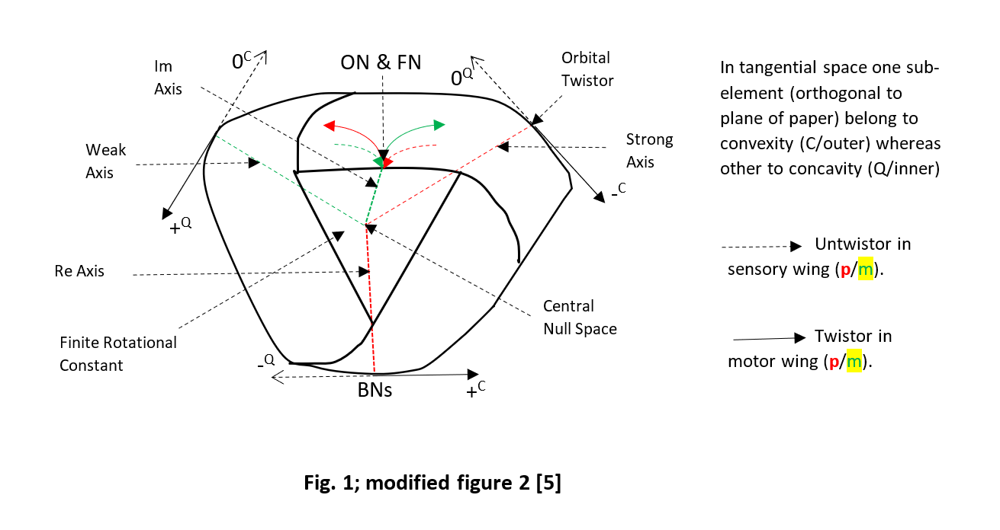
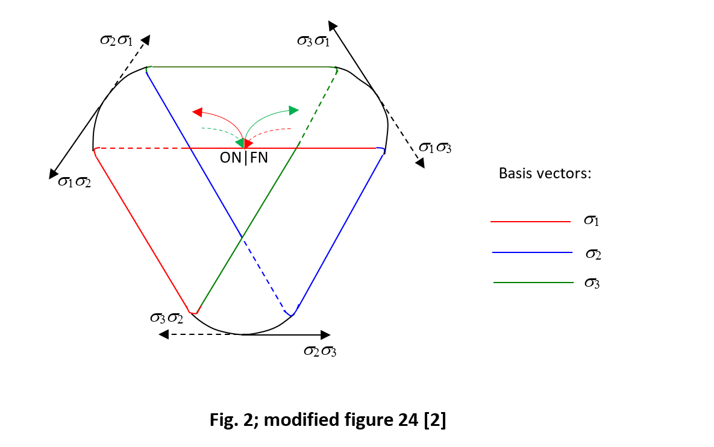

About Me
Since the memorable past I am subtly driven by a quest towards the origin of us and unified
network of our ‘Universal Existence.’ After completion of higher secondary level of education, I
continued my further study in Engineering in Jadavpur University; completed 1st year in
Mechanical Engineering. Circumstantially, I changed that stream and followed my educational
path in Medical Science. In my post graduate study, I chose the branch Orthopaedic Surgery that
is principally based on Biomechanics that fits with my initial technological trend. In my
professional life as Orthopaedic Surgeon initially I served Public and Private Hospital and finally
I worked in Government hospital for seventeen years. Presently I am doing private consultation
practice in Orthopaedic Surgery in Siliguri.
Along with the academic and professional journey I continued self-education in my leisure times.
I studied higher mathematics and physics giving priority to grasp relevant topics more
conceptually rather than study guided by institutional syllabus. Approximately since the year
2000 I started working on a Theoretical Model: ‘A Hypothetical Cognitive Model’, based on
topological origami. The work is highlighted as ‘Complex Möbius Field’ that get exposed
through six International Publications.
In between I participated in an International Workshop with my presentation 'A New Proposition
in Gait Analysis' in 'International Workshop on Complex Dynamics of Physiological Systems:
from Heart to Brain' organised by Department of Physics, Presidency College, Kolkata -
February 12 -14, 2007.
My study in medical science helped extend my further interest in understanding complex
dynamics of living system and my experience in Orthopaedic Surgery incite my interest in
complex analysis underlying systemic dynamism. Curiously this journey explores some new
basic operators e.g., untwistor, unspinor, windlass that complementarily fits in modular design of
this cognitive model.
Even though being an introvert, I enjoy the experiences of diverse facets of life. I feel fortunate
that I have gone through several spiritual courses based on Yoga, Meditation, Pranayama and
Sudarshan Kriya, organized by Art of Living foundation that I honour as my lifetime experience.
My sincere pranam to Pujya Guruji, Sri Sri Ravi Shankarji, founder of AOL.
Based on this work, one may believe that sooner or later science will come out partially from its
reductionist or visionary (rational) approach and adopt comprehensive approach incorporating
feeling (irrational) as stronger complementary half where Consciousness can be properly dealt
with sufficient predictability on subjective experiment also.
Research Synopsis
Complex Möbius field ($CMF$) may be demonstrated as a hypothetical cognitive model based on
rotational invariance, Finite Rotational Constant, in Möbius topology. All the statements and
inferences drawn in the work are based on symmetry principles, group functions, number
system and geometric algebra along the self-organization of $CMF$. One may propose this as the
fundamental approach in the study of ultimate science of consciousness. Self-organization
demands point ended strip without hole i.e., topologically equivalent simply to a sphere or an
infinitely stretched straight line or even more simply, a point or singularity. To configure
manifold Möbius strip it pivots at one end by Group untwist operation or $\pi$-chopping, a joint
operation: active sensory odd spin of Real ($Re$) end and alignment with passive motor Imaginary
($Im$) end incorporating a hole within. This transforms Re/Im number systems to rational
($RNS$)/Irrational ($INS$) ones. Periodical initiation of distoproximal differential start of the latter in
sensory wing ascend cumulatively in alternate opposite way of position and momentum
orbitally . Ascend continue in proximodistal integral twistor motor wing, diffeomorphic to
untwistor sensory one i.e., along total $720^{\circ}$ micro to Macro hierarchical self-organization. Albeit
their absolute goal is Fractal Dimensional (FD) mixed singularity, their current periodic reach is
its closest proximity possible where they regain original form, $Re/Im$ back, Fig 1.

|
This is FD-phase. Between complementary toggle of succeeding $FD$-phases, $ED$- (Elementary
Dimensionality) phase pulsate. Here two journeys converge simultaneously in exclusive
individual ascend of equatorial journey from sensory Bosonic Null ($BN$s) locality toward motor
Bosonic Null ($BNm$) locality. This is conjugate BN path, $N$ to $N+1$ – micro to Macro hierarchy
along intrinsic mass ($IM$) of subsystem. The individual journey may get centralized in Universal
event under absolute nonstimulation. Classico($Cl$)-quantum($q$) measurement is still snap mode.
Highest infinite P/AP is incorporated at BNs as structured past (Macro to micro self-
organization). Here, double helical orbital supercoiled genomic strands remain open under the
control of epigenomic ($IM$) joystick that truncates stochastic probability game in its favor. $FD$-
phase can mimic a state of sustained ED-phase orbitally under PT-symmetry. This is mapping:
$Cl-q$ by skipping momentum and $q-Cl$ by skipping position in temporary movie mode.
Numbers are placed in Möbius topology on the principle of aesthetic fitment of configural
Möbius symbols $\left(+^Q , -^C , +^C , -^Q , 0^C , 0^Q , 0 \text{ and } \infty \right)$. The theme may simulate computer language ‘$C$’
where specific group of functions are organized as specific object. Here, primary symbol is Null
(‘$0$’) with its ancillary complex dualities, Null derivatives. Middle subelement of trinary codon is
media that symbolize dynamism: ‘$+$’ position, forward without Null; ‘$-$’ momentum, backward
within Null; ‘$0$’ absolutely neutralized dynamism in the form of nontrivial ‘$0$’ that universally
captures $2$ nd order Prime scalar/pseudoscalar residues. Peripheral metrics of manifold is
symbolized as: Classical/superscript-$C$ (convexity) and quantum/superscript-$Q$ (concavity)
attributes. Obviously, no superscript designates neutral curvature of Null, Fig 1. In swirling
Möbius topology polar eccentric Null derivatives $\left(0^C \text{ and } 0^Q \right)$ from diagonal $FD$ windlasses, weak
and strong, in the form of ‘$X$’ of algebra search solution at equatorial centric Null. They are
nontrivial ‘$0$’ and finally may be trivial ‘$0$’; the latter one is ED Singularity or Central Null Space.
Consolidated outcomes of polar Nulls derivatives are: a) rational numbers come in single form
that depict position (particle) multiplicatively forward (scalar multiplication) whereas b)
irrational numbers depict momentum backward in this model comes in three forms: i) head or
finite component backward that envelops above rationals as wave additively (vector addition)
in sensory wing and turn forward with it exclusively. Resultant are mixed or impure finite
primes amongst interrelating finite antiprimes. This truncates probabilities stochastically in the
way towards final conformation of finite primes and antiprimes on the background of ascending
Infinite Prime. This is white or completely Classical $\left(+^C\right)$ or indivisible or incompressible
visionary; hence, macroscopically exposed as local Space. ii) tail or infinite component, not in
mixed duality as above, but rather on purity i.e., infinitely divisible, or compressible or black or
completely quantum $\left(-^Q\right)$. Hence, ascending infinite Antiprime is hidden local feeling i.e., local
Time or rest global space. iii) Grey numbers, neither white nor black, are interestingly central
between the above two, may be out of the crux of cruciate odd ED i.e., $C$-symmetry. Initially
they are as loose dejected orphans beyond the limit of being stochastic but finally play central
crucial role in Nullification back. They deterministically help in final conformation of finite
primes and antiprimes on the background of Infinite Prime in $Cl-q$ measurement, a state of
ecstatic Universal coherency that realizes indifferently whether Schrödinger cat is living or dead
or topologically solve Zeno’s paradox, a puzzle that handles discreteness and continuity
simultaneously.
Basis vectors $\left(\sigma_1, \sigma_2, \sigma_3\right)$ are edges of central open angle triangular doughnut of motor wing
(Odd or pointed 3D strip on the background of Even or flat 4D one), Fig. 1 and 2. Motor wing
decodes all encoded quaternion information (in Re $+ i + j + k$ format) out of sensory wing by
these discrete basis vectors (identifying $i$, $j$, $k$ with $i^{\sigma_1} , -i^{\sigma_2} , i^{\sigma_3}$, respectively) and store
them cumulatively back as quaternion update. In untwisting-twisting Möbius topology not only
rational ($p$ by $\sigma_1\sigma_2$ or Möbius symbol, $+^Q$ ), irrational ($m$ by $\sigma_1 \sigma_3$ or $-^C$ ), finite prime-antiprime
(converged rationals and head component of irrationals along simultaneity), infinite Prime
(Space)-Antiprime (Time), Weak $\left(\sigma_2 \sigma_1 \mp \sigma_1 \sigma_2 \text{ or } 0^C \mp +^Q \right)$, Strong
$\left(\sigma_3 \sigma_1 \pm \sigma_1 \sigma_3 \text{ or } 0^Q \pm -^C \right)$, Electro
$\left(\sigma_3 \sigma_2 + \sigma_2 \sigma_3 \text{ or } -^Q + +^C \right)$-Magnetic $\left(\sigma_2 \sigma_3 - \sigma_3 \sigma_2 \text{ or } +^C - -^Q \right)$
fields but also Space $\left(\sigma_1 \sigma_2 \sigma_2 \sigma_3 \sigma_3 \sigma_1 \text{ or } +^C \right)$-
Time $\left(\sigma_1 \sigma_2 \sigma_3 \text{ or } -^Q \right)$ fabric is expressed by these discrete basis vectors.

|
But if one track, basis vectors in 3D self-organized strip on 4D background, starting from one
point beyond the open angle he will come back to starting point. So, even though they decode
information by their discrete (oddity) unity vectors apparently, they are basically continuous
(Evenness) along with their background. It is noteworthy that principal aphorism of topology
demands continuity; this is well satisfied, here. Hence, Complex Möbius Field validates
unification of all fields including Null field i.e., structureless and formless Dynamic Euclidean
Field, under topological algorithm.
Research Project
Bidyut K. Sarkar, 2019, “Complex Möbius Field: The Web of Consciousness” - Journal of Consciousness Exploration & Research, 10(1): pp. 24-47 (Uploaded on 08/28/2024).
Project Presentation,
Paper,
Website
|
Research Publications
Bidyut K. Sarkar, 2019, “Complex Möbius Field: The Web of Consciousness” - Part I, Journal of Consciousness Exploration & Research, 10(1): pp. 24-47.
Paper,
Website
|
Bidyut K. Sarkar, 2019, “Complex Möbius Field: The Web of Consciousness” - Part II, Journal of Consciousness Exploration & Research, 10(1): pp. 48-64.
Paper,
Website
|
Bidyut K. Sarkar, 2020, “’Complex Möbius Field: The Web of Consciousness’ Revisited”, Journal of Consciousness Exploration & Research, 11(2): pp. 227-235.
Paper,
Website
|
Bidyut K. Sarkar, 2021, “Pulsatile Macroscopic Quantum Consciousness”, Journal of Consciousness Exploration & Research, 12(1): pp. 43-54.
Paper,
Website
|
Bidyut K. Sarkar, 2021, “Consciousness & Instrumental Astronomy”, Journal of Consciousness Exploration & Research, 12(3): pp. 278-286.
Paper,
Website
|
Chinmoy K. Bose, Bidyut K. Sarkar, Herbert Jelinek [2009], “Role of Nonlinear Dynamics in Endocrine Feedback,” Chaos and Complexity Letters (Volume 3, Issue 3), 266-69.
Website
|